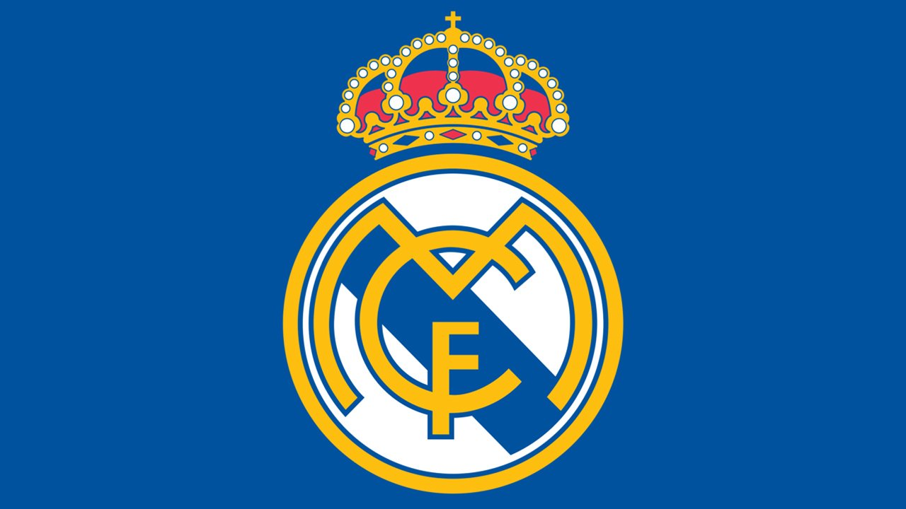

¡Hola! Soy Cristopher Kiyax Apasionado por los deportes, mis favoritos son el basketball y el fútbol, y sigo de cerca a mis equipos preferidos: Los Angeles Lakers y el Real Madrid. En mi tiempo libre, disfruto de los videojuegos, especialmente Call of Duty, Rocket League y FIFA. Además, me encanta jugar basketball, ir al cine y escuchar música. También tengo interés en el mundo financiero, y estoy decidido a estudiar la carrera de Finanzas para continuar explorando ese campo. ¡Gracias por visitar mi página!
1 / 3

Real Madrid
2 / 3

Lakers
3 / 3
Finanzas